Chapter 11 Simple Linear Regression
In Chapter 10, we explored ANOVA, a method for examining the relationship between a categorical variable (with three or more groups or treatments) and a quantitative outcome. In this chapter, we shift to simple linear regression, which analyzes the relationship between two quantitative variables. Linear regression allows us to model and predict how changes in one variable are associated with changes in another, providing insights into trends, correlations, and potential causation in data.
11.1 The Simple Linear Regression Model
In many cases, we wish to quantify and analyze the relationship between two quantitative variables, where one variable helps predict or explain the other.
Example 11.1 The following data give the speed of cars (mph) and the distances (feet) taken to stop. Note that the data were recorded in the 1920s.
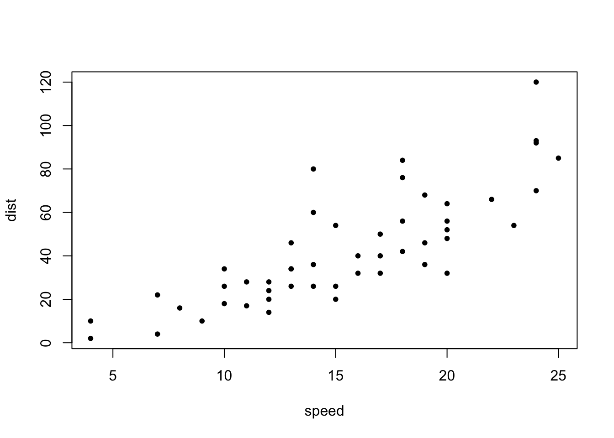
Variables:
X = independent variable / predictor variable / explanatory variable
Y = dependent variable / response variable
In simple linear regression, we examine the relationship between a single predictor variable and a single response variable.
When multiple predictor variables are involved, we use multiple linear regression.
Goal: Using a simple random sample, we aim to build a model that represents the relationship between \(X\) and \(Y\) for the population. This model is represented by the least squares regression line – the line that best fits the data points, minimizing the sum of squared differences between observed values and the predictions made by the line.
Estimated Regression Equation:
Population Model:
Assumptions and Notes for Simple Linear Regression (SLR):
Linearity in the Parameters: The relationship between \(X\) and \(Y\) can be described using linear parameters \(\beta_0\) and \(\beta_1\) in the equation \(Y = \beta_0 + \beta_1 X + \epsilon\).
Error Assumptions: The errors (\(\epsilon_i\)) are independent, identically distributed normal random variables with mean 0 and constant variance \(\sigma^2\). One objective of SLR is to estimate \(\sigma^2\), the variance of these errors.
Expected Value of \(Y\): For a given value of \(X\), the mean of \(Y\) is represented by the line of best fit: \[E[Y|X] = \beta_0 + \beta_1 X \]
Estimating \(\sigma\): Because observed data points do not lie exactly on the line of best fit, we estimate \(\sigma\) to quantify the spread or variability of data around this line.
11.2 Correlation
Recall: Correlation is a measure of linear relationship between two quantitative variables. The population correlation coefficient is represented by \(\rho\) and the sample correlation coefficient is represented by \(r\).
Correlation is related to covariance, \(\rho = \frac{Cov(X,Y)}{\sigma_X \sigma_Y}\), but it is independent of units and is bounded by \(\pm 1\), i.e., \(-1 \leq \rho \leq 1\).
If two variables are uncorrelated, then they are not necessarily independent. This could be the case if the variables have a nonlinear relationship.
\[r = \frac{S_{xy}}{\sqrt{S_{xx}}\sqrt{S_{yy}}}, \text{where } S_{xx} = \sum_{i=1}^n (x_i-\bar{x})^2, S_{yy} = \sum_{i=1}^n (y_i-\bar{y})^2, S_{xy} = \sum_{i=1}^n (x_i - \bar{x})(y_i - \bar{y})\]
Example 11.2 Some examples of some scatterplots and their associated sample correlation coefficients.
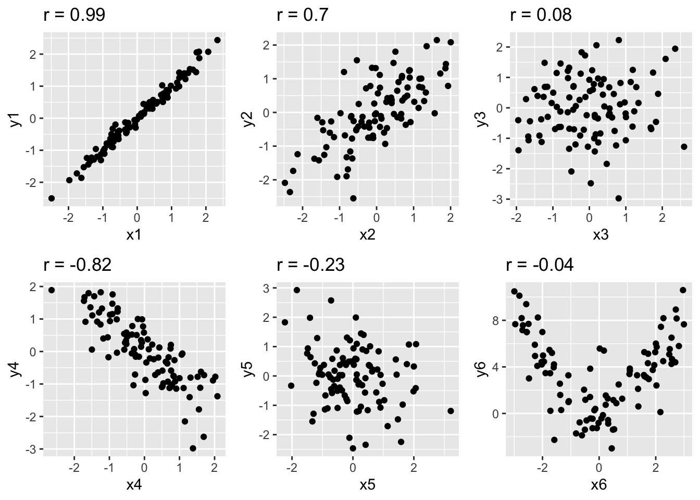
Note: Correlation does not imply causation!
11.3 Estimating Model Parameters
Criterion for determining the line of best fit
We want to minimize the sum of squared errors (SSE), that is, we want to find \(b_0\) and \(b_1\) that minimize \(SSE = \sum_{i=1}^n [y_i - (b_0 + b_1 x)]^2\).
Illustration:
Normal Equations:
SLR estimates
\[\text{Estimated Regression Equation: } \hat{y} = b_0 + b_1 x\]
\[b_0 = \bar{y} - b_1 \bar{x}\]
\[b_1 = \frac{S_{xy}}{S_{xx}} = \frac{s_y}{s_x} \cdot r_{xy} = \frac{\sum (x_i - \bar{x})(y_i - \bar{y})}{\sum (x_i - \bar{x})^2}\]
\[S_{xx} = \sum_{i=1}^n (x_i-\bar{x})^2 \qquad S_{yy} = \sum_{i=1}^n (y_i-\bar{y})^2 \qquad S_{xy} = \sum_{i=1}^n (x_i - \bar{x})(y_i - \bar{y})\]
Interpreting \(b_1\) and \(b_0\)
The estimated slope, \(b_1\), can be interpreted as the estimated change in y for a unit increase in x.
The estimated intercept, \(b_0\), can be interpreted as the estimated value of y when x is 0.
Example 11.3 Fill in the table to calculate the estimated regression equation and plot it on the figure below.
| \(\Sigma\) | ||||||
|---|---|---|---|---|---|---|
| \(x_i\) | 1 | 2 | 3 | 4 | 5 | |
| \(y_i\) | 3 | 5.5 | 5.5 | 6.5 | 9.5 | |
| \(x_i - \bar{x}\) | ||||||
| \((x_i - \bar{x})^2\) | ||||||
| \(y_i - \bar{y}\) | ||||||
| \((x_i - \bar{x})(y_i - \bar{y})\) |
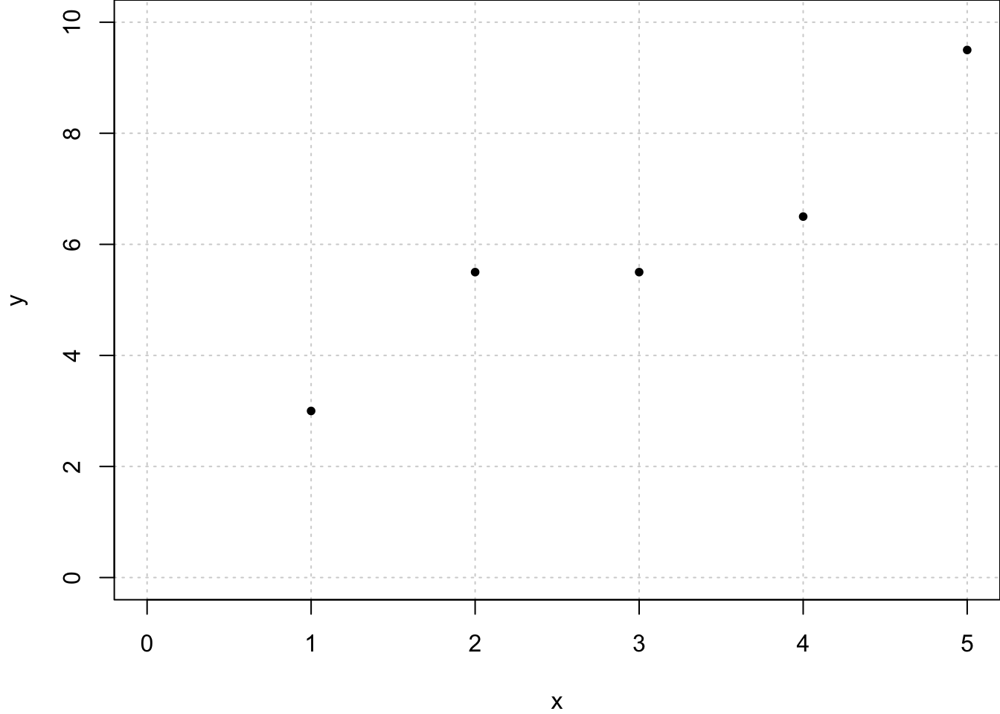
Example 11.4 Here’s how to use R to do the calculations.
# enter the data
x = c(1,2,3,4,5)
y = c(3,5.5,5.5,6.5,9.5)
# run the linear regression and see the results
model = lm(y~x)
summary(model)##
## Call:
## lm(formula = y ~ x)
##
## Residuals:
## 1 2 3 4 5
## -0.2 0.9 -0.5 -0.9 0.7
##
## Coefficients:
## Estimate Std. Error t value Pr(>|t|)
## (Intercept) 1.8000 0.9381 1.919 0.1508
## x 1.4000 0.2828 4.950 0.0158 *
## ---
## Signif. codes: 0 '***' 0.001 '**' 0.01 '*' 0.05 '.' 0.1 ' ' 1
##
## Residual standard error: 0.8944 on 3 degrees of freedom
## Multiple R-squared: 0.8909, Adjusted R-squared: 0.8545
## F-statistic: 24.5 on 1 and 3 DF, p-value: 0.01582Example 11.5 Here is the car stopping distance example given at the beginning of the chapter. Note that we will load the ``cars’’ dataset that is provided in R.
# load the data
data(cars)
# run the regression and summarize the results
model = lm(dist~speed,data=cars)
summary(model)##
## Call:
## lm(formula = dist ~ speed, data = cars)
##
## Residuals:
## Min 1Q Median 3Q Max
## -29.069 -9.525 -2.272 9.215 43.201
##
## Coefficients:
## Estimate Std. Error t value Pr(>|t|)
## (Intercept) -17.5791 6.7584 -2.601 0.0123 *
## speed 3.9324 0.4155 9.464 1.49e-12 ***
## ---
## Signif. codes: 0 '***' 0.001 '**' 0.01 '*' 0.05 '.' 0.1 ' ' 1
##
## Residual standard error: 15.38 on 48 degrees of freedom
## Multiple R-squared: 0.6511, Adjusted R-squared: 0.6438
## F-statistic: 89.57 on 1 and 48 DF, p-value: 1.49e-12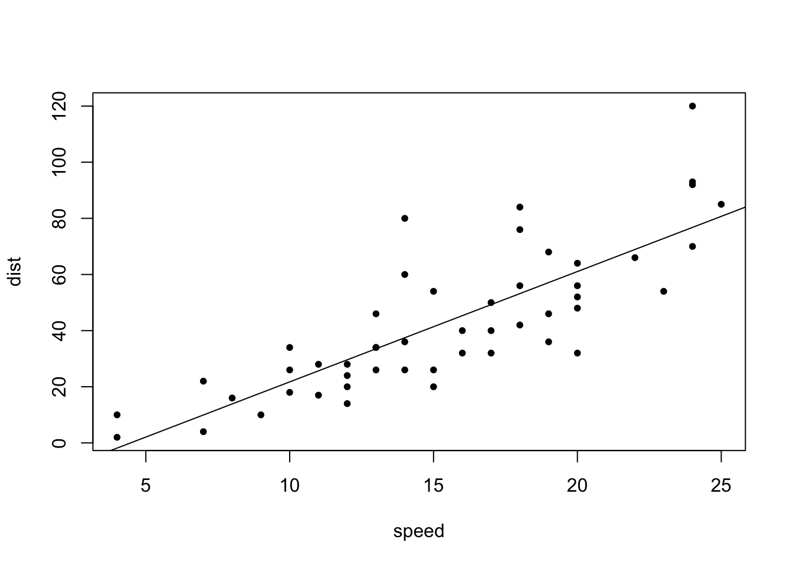
11.4 Assessing Model Fit and Inferences for the Slope Parameter, \(\beta_1\)
While an estimated regression equation can be calculated for any set of data pairs, it is essential to determine whether a linear model is appropriate for the data.
There are multiple ways to assess model fit.
- Coefficient of determination, \(R^2\)
- Linear Regression Hypothesis Test for \(b_1\)
- Model diagnostics (more on this later)
ANOVA for Regression
Often, we wish to analyze the quality of the estimated regression equation line using an analysis of variance approach. In this setup, the total variation of the dependent variable is partitioned into subcomponents.
\(\boxed{SST = \sum_{i=1}^n (y_i -\bar{y})^2}\) = total sum of squares = ``total variation’’
\(\boxed{df_T = n-1}\) (n = sample size)
\(\boxed{SSR = \sum_{i=1}^n (\hat{y_i} - \bar{y})^2}\) = regression sum of squares = “variation explained by the predictor x”
\(\boxed{df_R = p}\) (p = number of predictors, p=1 for SLR)
\(\boxed{SSE = \sum_{i=1}^n (\hat{y_i} - y_i)^2}\) = error sum of squares = “variation not explained by the predictor x” \(\boxed{df_E = n-p-1}\)
Note: We can estimate \(\sigma^2\) with \(s^2 = MSE\).
Example 11.6 Here’s how to get the ANOVA output for the car stopping example.
## Analysis of Variance Table
##
## Response: dist
## Df Sum Sq Mean Sq F value Pr(>F)
## speed 1 21186 21185.5 89.567 1.49e-12 ***
## Residuals 48 11354 236.5
## ---
## Signif. codes: 0 '***' 0.001 '**' 0.01 '*' 0.05 '.' 0.1 ' ' 1Coefficient of Determination, \(R^2\)
\(\boxed{R^2 = \frac{SSR}{SST}}\)
This is the proportion of the variation in Y that is explained by X.
Higher \(R^2\) is typically preferred and suggests a better “fit” (careful!)
\(R^2 = r_{xy}^2\), where \(r_{xy}\) is the correlation coefficient.
Linear Regression Hypothesis Test
Is there a linear relationship between the predictor(s) and the response? \(H_0: \beta_1 = 0\) vs. \(H_a: \beta_1 \neq 0\)
\(\boxed{F_{test} = \frac{MSR}{MSE}}\) (\(df_1 = p\), \(df_2 = n-p-1\))
For SLR, this is equivalent to a t-test.
If \(F_{test}\) is large, then there is evidence that there is a significant linear relationship between the predictor(s) and the response.
Example 11.7 Let’s look again at regression output for the cars dataset to see the results of the hypothesis test.
##
## Call:
## lm(formula = dist ~ speed, data = cars)
##
## Residuals:
## Min 1Q Median 3Q Max
## -29.069 -9.525 -2.272 9.215 43.201
##
## Coefficients:
## Estimate Std. Error t value Pr(>|t|)
## (Intercept) -17.5791 6.7584 -2.601 0.0123 *
## speed 3.9324 0.4155 9.464 1.49e-12 ***
## ---
## Signif. codes: 0 '***' 0.001 '**' 0.01 '*' 0.05 '.' 0.1 ' ' 1
##
## Residual standard error: 15.38 on 48 degrees of freedom
## Multiple R-squared: 0.6511, Adjusted R-squared: 0.6438
## F-statistic: 89.57 on 1 and 48 DF, p-value: 1.49e-12Inferences About the Slope Parameter \(\beta_1\)
Assuming we have met the assumptions of linear regression (i.e., IID normal errors), then we can create a confidence interval for \(\beta_1\) or run a hypothesis test of linear relationship (\(H_0: \beta_1 = 0\) vs. \(H_a: \beta_1 \neq 0\).
\(E[b_1] = \beta_1\) (\(b_1\) is an unbiased estimator of \(\beta_1\))
\(Var(b_1) = \sigma_{b_1}^2 = \frac{\sigma^2}{S_{xx}} = \frac{\sigma^2}{\sum (x_i - \bar{x})^2}\)
\(s_{b_1} = \frac{s}{\sqrt{S_{xx}}} = \frac{s}{\sqrt{\sum (x_i - \bar{x})^2}}\)
The estimator \(b_1\) has a normal distribution.
\(t = \frac{b_1 - \beta_1}{s_{b_1}}\) has a t-distribution with \(n-p-1\) degrees of freedom.
Example 11.8 Create a 95% confidence interval for \(\beta_1\) using the “cars” dataset and determine if there is evidence of a linear relationship between and .
## 2.5 % 97.5 %
## (Intercept) -31.167850 -3.990340
## speed 3.096964 4.76785311.5 The Prediction of Future Y Values
Given a specific value of X (denoted \(x_p\)), we can use the estimated regression equation to calculate a point estimate or fitted value of Y, denoted \(\hat{y}_p\), by simply plugging \(x_p\) into the estimated regression equation. \(\hat{y}_p = b_0 + b_1 x_p\)
The residual of the i\(^{th}\) observation is \(r_i = y_i - \hat{y}_i = \text{actual y value} - \text{predicted y value}\).
Example 11.9 Suppose we want to estimate the stopping distance for a car going 20.5mph. We can get this estimate by simply plugging this value into our estimated regression equation. Recall that the estimated regression equation is: \(\hat{y} = -17.5791 + 3.9324 x\).
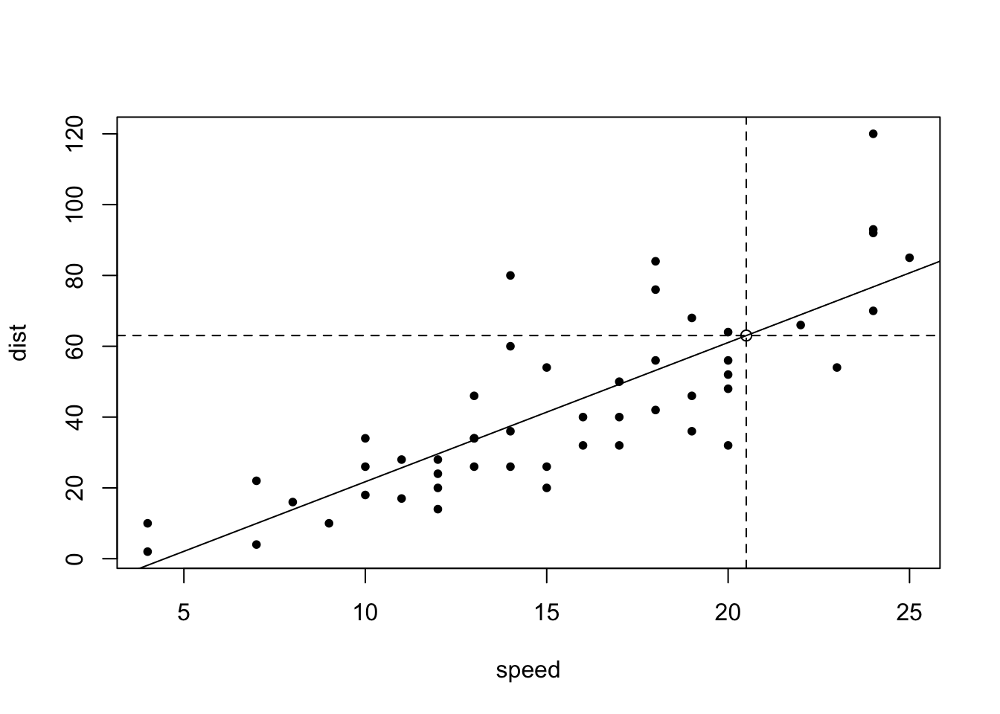
In the above example, we computed a point estimate for the stopping distance of a car going 20.5mph. As with other topics we’ve explored so far in statistics, we prefer to have a measure of uncertainty attached with all point estimates.
For regression, this leads us to two kinds of intervals:
Confidence interval for mean response
Prediction interval for a new data value
Confidence intervals for mean response tell us how well we have determined the mean function, \(E[Y|X]\), i.e., the line of best fit.
Prediction intervals for a new data value tell us how well we can estimate the dependent value for a given new predictor value.
These are fundamentally two different kinds of intervals.
Confidence Interval for Mean Response
A confidence interval for mean response creates an uncertainty estimate for the line of best fit, i.e., the mean function, \(E[Y|X]\).
In other words, a confidence interval for mean response creates an interval of plausible values for the average response value for a given predictor value.
Theorem 11.1 Let \(x_p\) be the value of the predictor variable and let \(\hat{y}_p = b_0 + b_1 x_p\) be the fitted value. Then:
\(E[\hat{y}_p] = \beta_0 + \beta_1 x_p\)
\(Var(\hat{y}_p) = MSE \cdot \left(\frac{1}{n} + \frac{(x_p - \bar{x})^2}{\sum (x_i -\bar{x})^2}\right)\)
\(SE(\hat{y}_p) = \sqrt{MSE \cdot \left(\frac{1}{n} + \frac{(x_p - \bar{x})^2}{\sum (x_i -\bar{x})^2}\right)}\)
A confidence interval for the mean response is given by: \[\hat{y}_p \pm t_{\alpha/2,n-2} \cdot \sqrt{MSE \cdot \left(\frac{1}{n} + \frac{(x_p - \bar{x})^2}{\sum (x_i -\bar{x})^2}\right)} \]
The theorem above allows for us to create confidence intervals for \(E[y_p]\), i.e., the mean response for a given x-value.
Example 11.10 Create a confidence interval for the mean response stopping distance for a car moving at 20.5 miles per hour. Note: \(n=50\), \(\bar{x} = 15.4\), \(\sum (x_i-\bar{x})^2 = 1370\), \(\sqrt{MSE} = 15.38\), \(t_{c.v.}=2.01\).
## [1] 2.010635# create confidence interval for mean response at x_p = 20.5
predict(model, newdata = data.frame(speed=20.5), interval = "confidence")## fit lwr upr
## 1 63.03528 56.92968 69.14089We can also create a simultaneous confidence band for mean response for the entire regression line. Note that these band are parabolic.
Example 11.11 Create a 95% confidence band for the mean response of the cars dataset.
# plot the data and the line of best fit
plot(cars)
abline(model)
# create a grid of speed values and put into a data frame
speed.grid = seq(min(cars$speed), max(cars$speed), by=0.1)
speed.df = data.frame(speed=speed.grid)
# calculate the confidence interval at each grid point and plot
conf_interval = predict(model, newdata=speed.df,
interval="confidence",level = 0.95)
lines(speed.grid, conf_interval[,2], col="blue", lty=2)
lines(speed.grid, conf_interval[,3], col="blue", lty=2)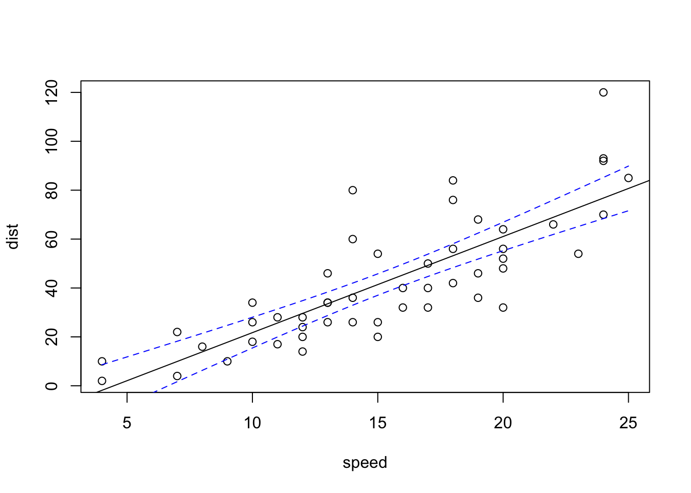
Is it plausible that the mean response at \(x_p=20\) mph is 80 feet?
Prediction Interval for a New Data Value
A prediction interval for a new data value creates an uncertainty estimate for a new data value. Note that this uncertainty is a combination of uncertainty from the line of best fit as well as the uncertainty from a single new observation.
In other words, a prediction interval for a new data value creates an interval of plausible values for the response value for a given new predictor value.
Theorem 11.2 Let \(x_p\) be the value of the predictor variable and let \(\hat{y}_p = b_0 + b_1 x_p\) be the fitted value. Then:
\(E[\hat{y}_p] = \beta_0 + \beta_1 x_p\)
\(Var(\hat{y}_p) = MSE \cdot \left(1 + \frac{1}{n} + \frac{(x_p - \bar{x})^2}{\sum (x_i -\bar{x})^2}\right)\)
\(SE(\hat{y}_p) = \sqrt{MSE \cdot \left(1 +\frac{1}{n} + \frac{(x_p - \bar{x})^2}{\sum (x_i -\bar{x})^2}\right)}\)
A prediction interval for a new observation is given by: \[\hat{y}_p \pm t_{\alpha/2,n-2} \cdot \sqrt{MSE \cdot \left(1 + \frac{1}{n} + \frac{(x_p - \bar{x})^2}{\sum (x_i -\bar{x})^2}\right)} \]
The theorem above allows for us to create prediction intervals for \(y_p\), i.e., the response for a new x-value..\
Example 11.12 Create a 95% prediction interval for a car moving at 20.5 miles per hour. Note: \(n=50\), \(\bar{x} = 15.4\), \(\sum (x_i-\bar{x})^2 = 1370\), \(\sqrt{MSE} = 15.38\), \(t_{c.v.}=2.01\).
# create confidence interval for mean response at x_p = 20.5
predict(model, newdata = data.frame(speed=20.5), interval = "prediction")## fit lwr upr
## 1 63.03528 31.51555 94.55502We can also create a simultaneous prediction band for a new data value for the entire regression line. Note that these band are linear and parallel.
Example 11.13 Create a 95% prediction band for a new response of the cars dataset.
# plot the data and the line of best fit
plot(cars)
abline(model)
# create a grid of speed values and put into a data frame
speed.grid = seq(min(cars$speed), max(cars$speed), by=0.1)
speed.df = data.frame(speed=speed.grid)
# calculate the confidence interval at each grid point and plot
conf_interval = predict(model, newdata=speed.df,
interval="prediction",level = 0.95)
lines(speed.grid, conf_interval[,2], col="blue", lty=2)
lines(speed.grid, conf_interval[,3], col="blue", lty=2)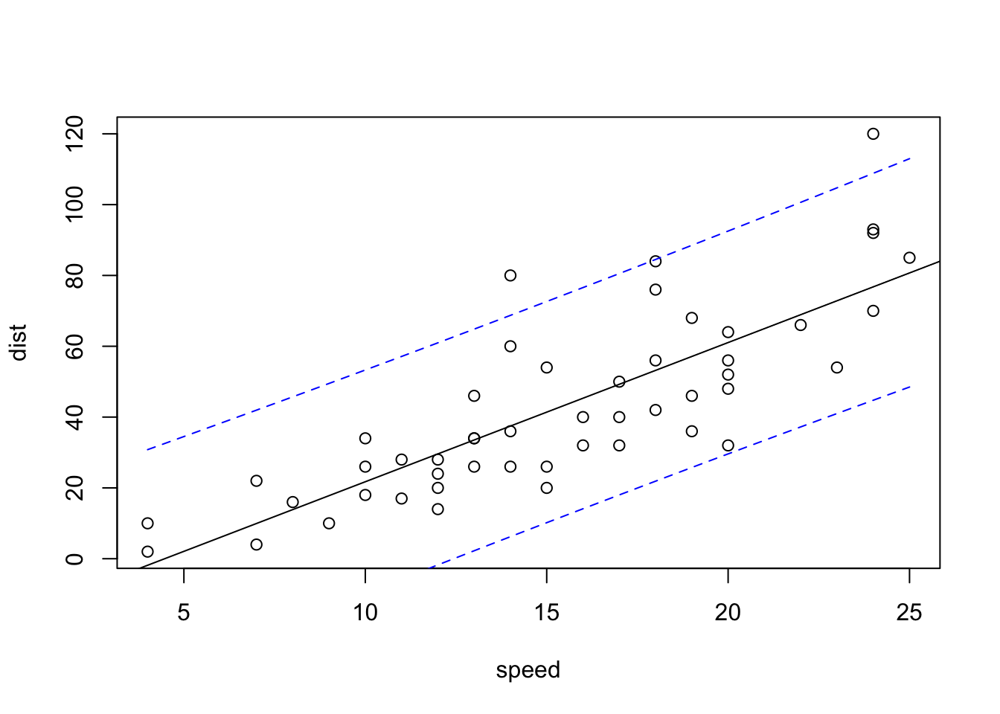
Is it plausible that a car going 20 mph has a stopping distance of 80 feet?
11.6 Model Diagnostics
Recall: Simple linear regression makes a number of assumptions which should be checked to make sure that such a model is appropriate.
Assumptions:
Linearity: the mean response of the response variable is a linear function of the predictor variable. In multiple regression, the response variable is a linear combination of the predictor variables.
Constant Variance: different values of the predictor variables have the same variance in their errors. This is also called homoscedasticity.
Normal Errors: all errors are normally distributed (with constant variance).
Independent Errors: all errors are independent.
Examples of how to diagnose assumptions (1)-(3) will be given with toy datasets that either meet or violate the assumptions.
Here’s how to obtain diagnostic plots in R.
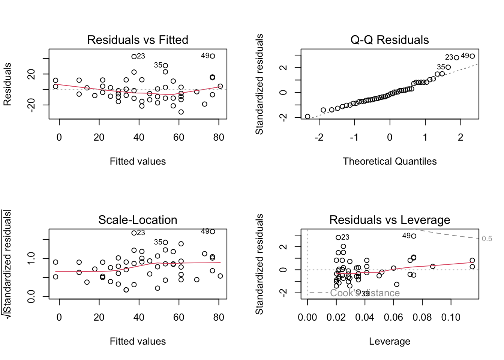
Linearity
Two toy datasets will be created, one linear and one nonlinear. Residual analysis will be used identify violations to the linearity assumption.
set.seed(2020)
n=100
x = runif(n) # some random x-values
y1 = x + rnorm(n,sd=0.1) # linear
y2 = x^2 + rnorm(n,sd=0.1) # nonlinear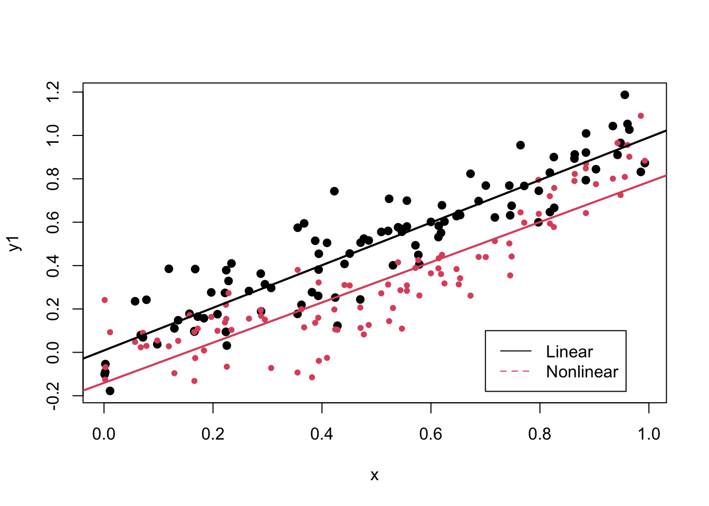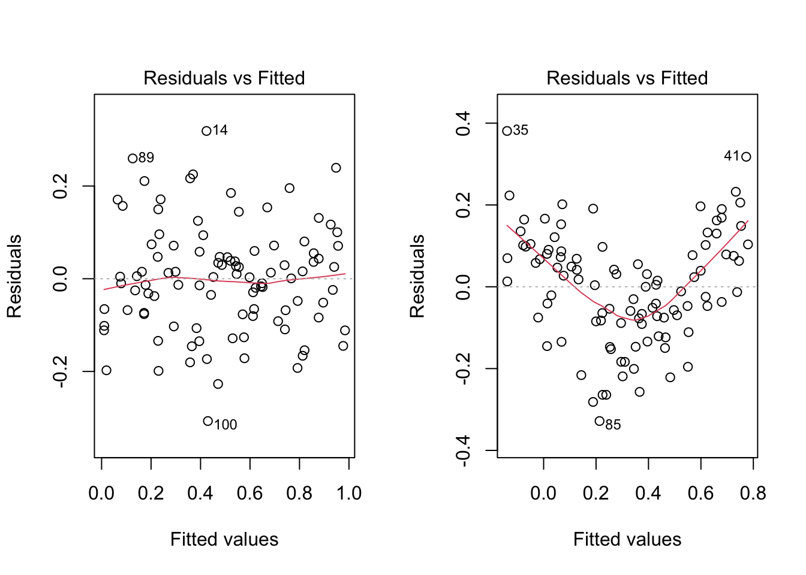
Constant Variance
Two toy datasets will be created, one with constant variance and one with nonconstant. Residual analysis will be used identify violations to the constant variance assumption.
set.seed(2020)
n=100
x = runif(n) # some random x-values
y1 = x + rnorm(n,sd=1) # constant variance
y2 = x + rnorm(n,sd=x) # nonconstant variance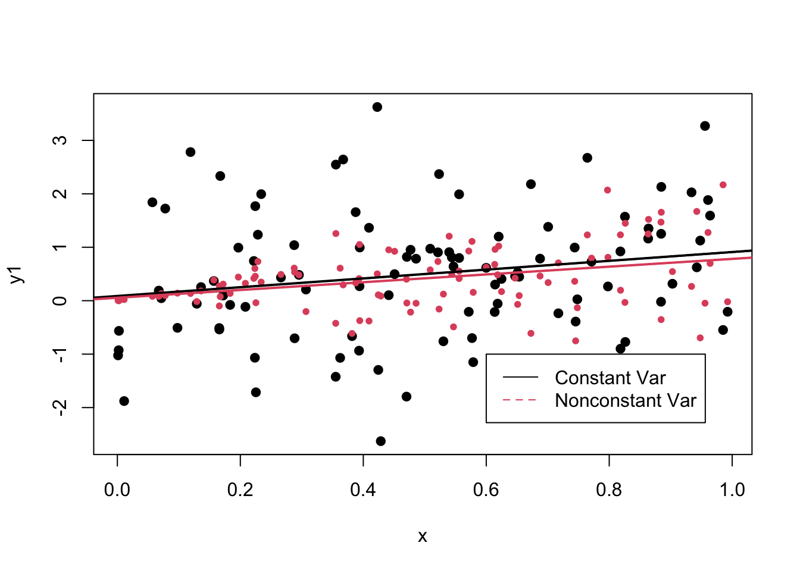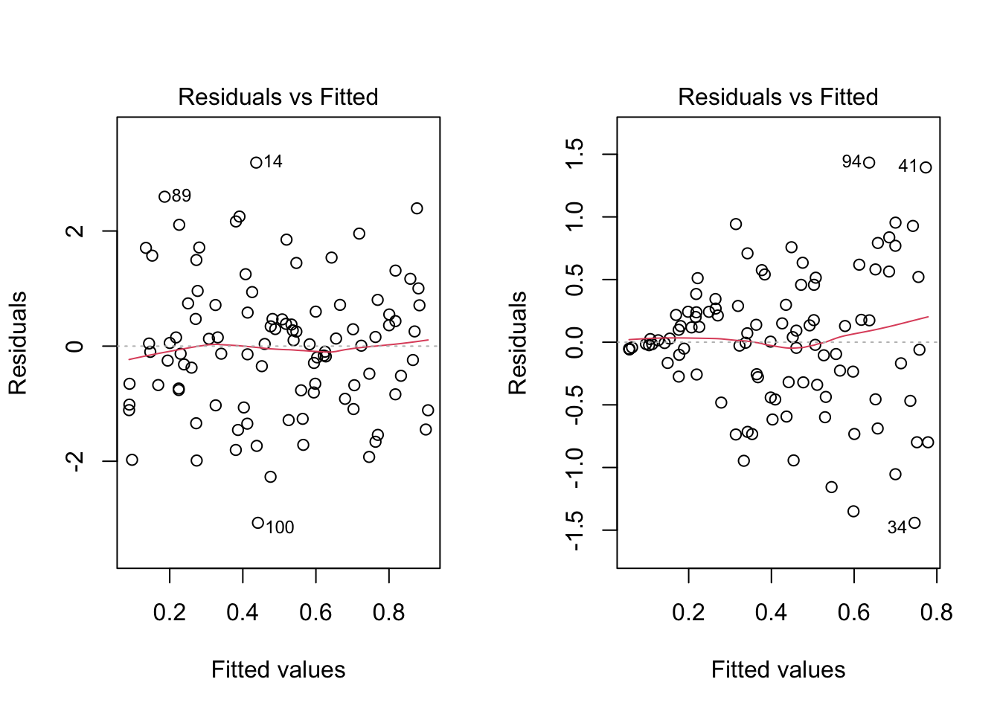
Normal Errors
Two toy datasets will be created, one with normal errors and one with Cauchy errors. A QQ-plot will be used identify violations to the normal errors assumption.
set.seed(2020)
n=100
x = runif(n) # some random x-values
y1 = x + rnorm(n,sd=0.1) # normal errors
y2 = x + rcauchy(n,scale = 0.01) # laplace errors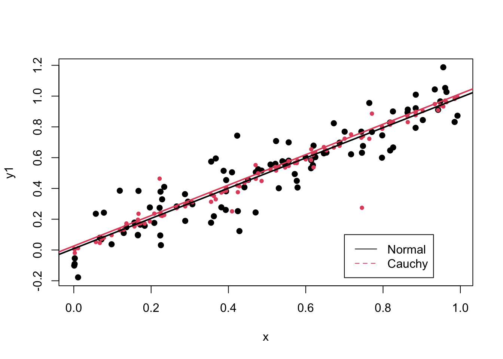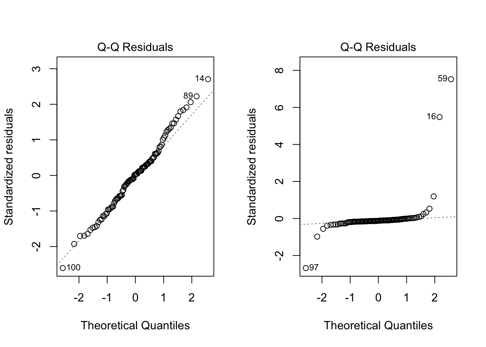
11.7 Extrapolation
Extrapolation
Extrapolation involves using a regression model to predict values outside the observed data range. Such predictions can be unreliable, as relationships may not hold beyond the data limits, and unknown factors can affect outcomes. Caution is advised when extrapolating beyond the observed \(X\)-values.
Here are two examples:
Estimating Housing Prices: A model based on recent trends might suggest a steady increase in housing prices. However, extrapolating beyond the observed data range could overlook economic shifts or policy changes, resulting in overly optimistic predictions.
Drug Dosage Effects: In medical studies, the relationship between dosage and effectiveness may appear linear within a safe range. Extrapolating to higher doses could ignore toxicity limits, leading to predictions that overestimate benefits and underestimate potential risks.
Example 11.14 The age and weight of Aaron’s cat, Ellie, is plotted below for her first 10 months. How much would you predict Ellie weighed after 1000 days? [Caution: Extrapolation!]
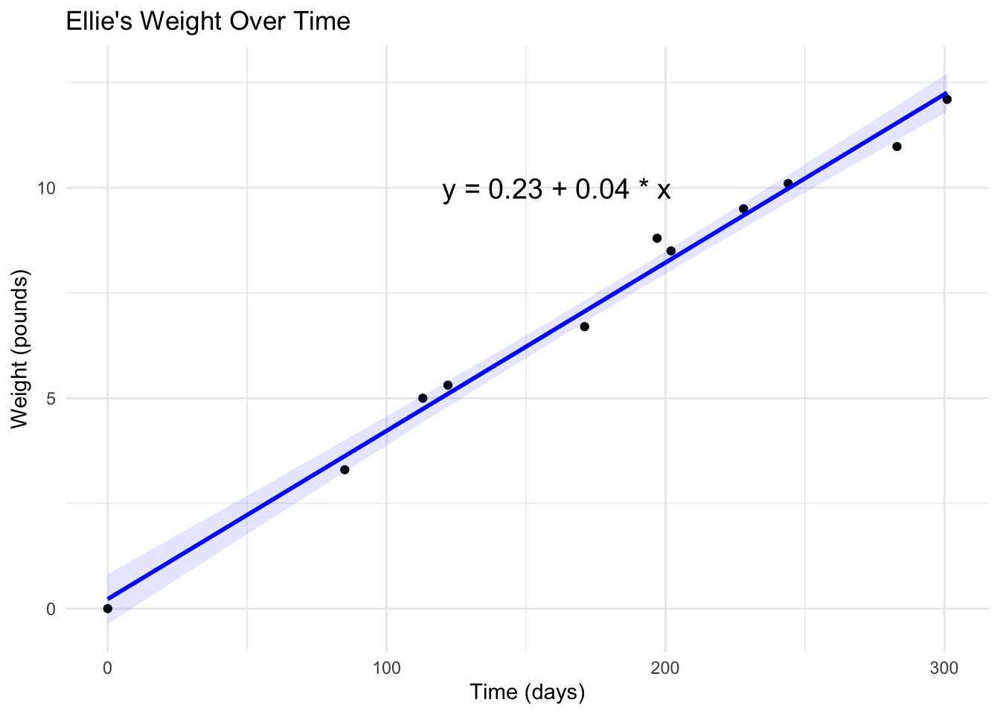
Below is Ellie’s weight up until day 1000. How does this compare with prediction using data up until day 300?
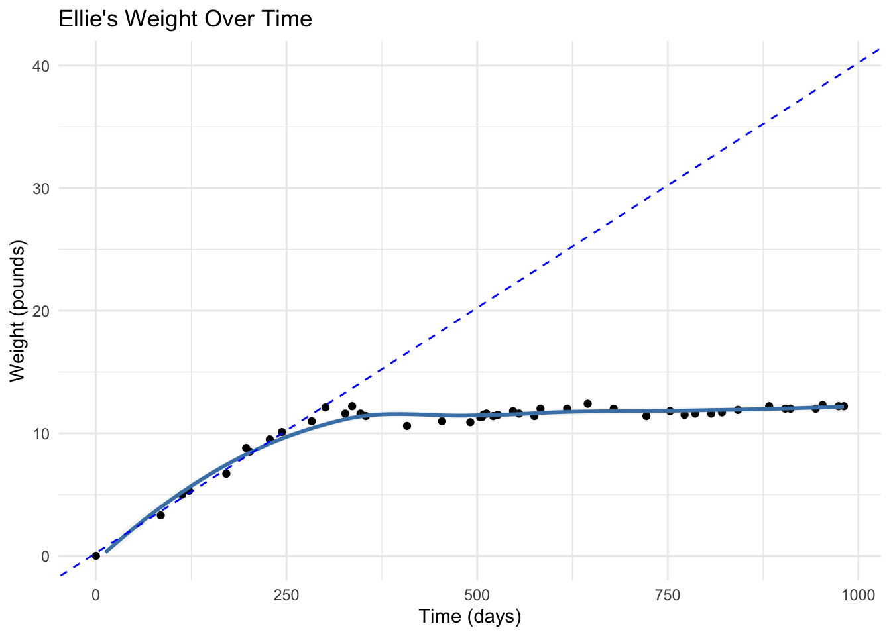
11.8 R Companion for Chapter 11
Example 11.15 The dataset is provided in the base version of R. The data is on the relation between temperature in degrees Celsius and vapor pressure of mercury in millimeters (of mercury).
Let’s begin by looking at the header of the data and calculating the correlation.
## temperature pressure
## 1 0 0.0002
## 2 20 0.0012
## 3 40 0.0060
## 4 60 0.0300
## 5 80 0.0900
## 6 100 0.2700## temperature pressure
## temperature 1.0000000 0.7577923
## pressure 0.7577923 1.0000000The correlation matrix is given in the example above. The diagonal elements of the correlation matrix shows that any variable is perfectly correlated with itself (i.e., \(r_{xx} = 1\)). In the off diagonal, you can see the correlation between the and is 0.758 which a strong, positive linear relationship.
Let’s fit a simple linear regression model with the being the predictor variable and being the response variable.
##
## Call:
## lm(formula = pressure ~ temperature, data = pressure)
##
## Residuals:
## Min 1Q Median 3Q Max
## -158.08 -117.06 -32.84 72.30 409.43
##
## Coefficients:
## Estimate Std. Error t value Pr(>|t|)
## (Intercept) -147.8989 66.5529 -2.222 0.040124 *
## temperature 1.5124 0.3158 4.788 0.000171 ***
## ---
## Signif. codes: 0 '***' 0.001 '**' 0.01 '*' 0.05 '.' 0.1 ' ' 1
##
## Residual standard error: 150.8 on 17 degrees of freedom
## Multiple R-squared: 0.5742, Adjusted R-squared: 0.5492
## F-statistic: 22.93 on 1 and 17 DF, p-value: 0.000171The estimated regression is \(\hat{pressure} = -147.90 + 1.51 \cdot temperature\). A one degree Celsius increase in temperate of mercury is associated with an increase of 1.51 in vapor pressure.\
Is this model appropriate? Let’s plot the data along with the line of best fit.
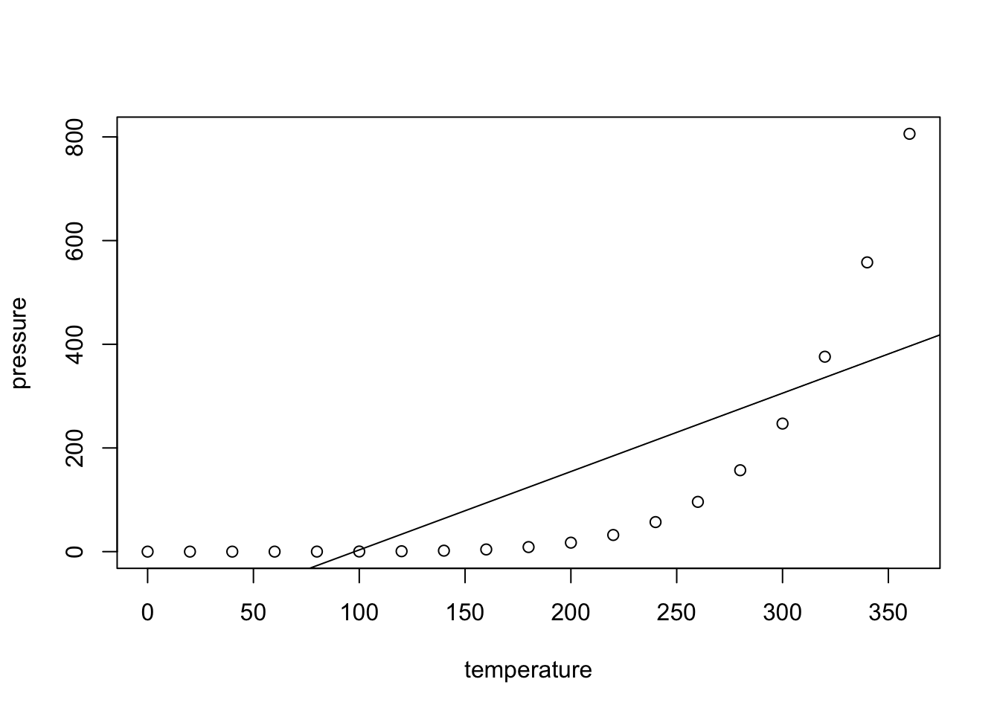
As seen in the above plot, our simple linear regression model is completely inadequate. We could determine that a nonlinearity exists by looking at the first residual diagnostic plot.
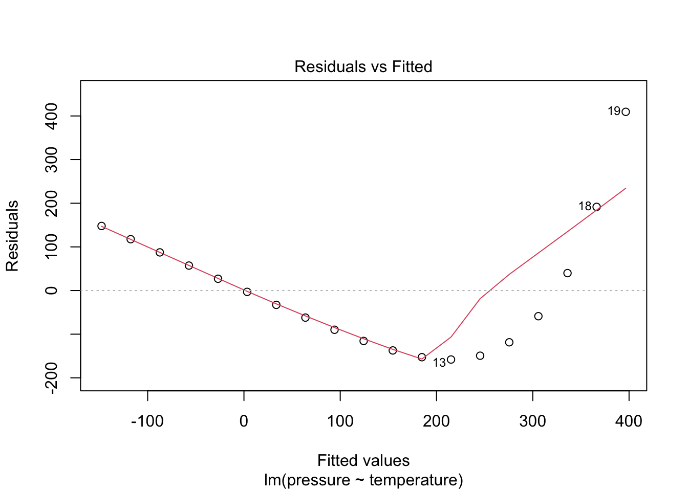
In this diagnostic plot, we see strong evidence of an unaccounted for nonlinearity as the shape of the graph is not approximately flat.
Based on the scatterplot on the previous page, there appears to be a possibly exponential relationship between temperature and pressure. Let’s try log transforming pressure and refitting the linear regression model. (Note: Variable transformations are covered in Chapter 12.)
##
## Call:
## lm(formula = log(pressure) ~ temperature, data = pressure)
##
## Residuals:
## Min 1Q Median 3Q Max
## -2.4491 -0.6876 0.2866 0.8716 1.1365
##
## Coefficients:
## Estimate Std. Error t value Pr(>|t|)
## (Intercept) -6.068144 0.483831 -12.54 5.10e-10 ***
## temperature 0.039792 0.002296 17.33 3.07e-12 ***
## ---
## Signif. codes: 0 '***' 0.001 '**' 0.01 '*' 0.05 '.' 0.1 ' ' 1
##
## Residual standard error: 1.096 on 17 degrees of freedom
## Multiple R-squared: 0.9464, Adjusted R-squared: 0.9433
## F-statistic: 300.3 on 1 and 17 DF, p-value: 3.07e-12plot(pressure~temperature,data=pressure)
x.new = 0:350
y.new = predict(model2,newdata=list(temperature=x.new,interval="confidence"))
lines(x.new,exp(y.new))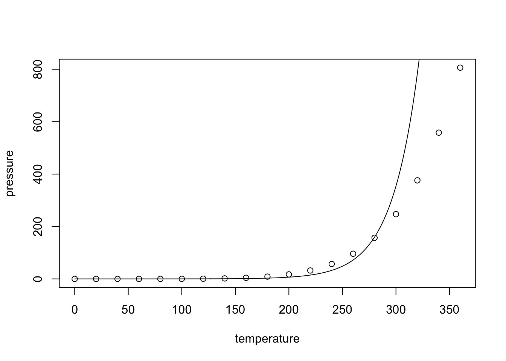
This model seems to fit the data better than the untransformed simple linear regression model but is still somewhat inadequate for temperatures greater than 300C. Additionally, the residual diagnostic plot suggest our model is inadequate. A better model should be found if modeling temperatures above 300C is of interest.
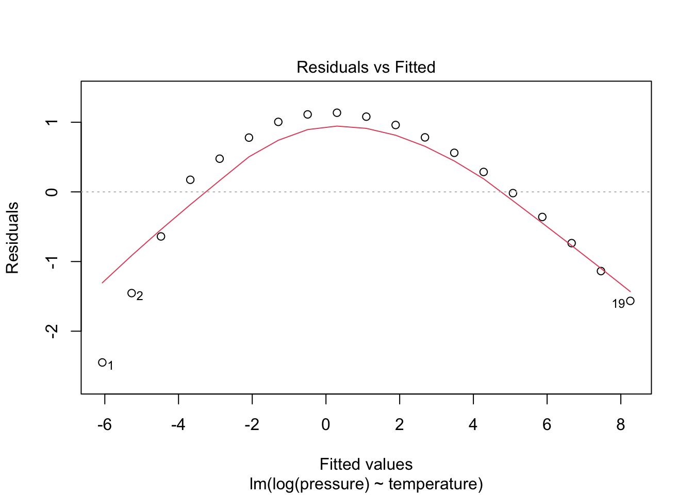